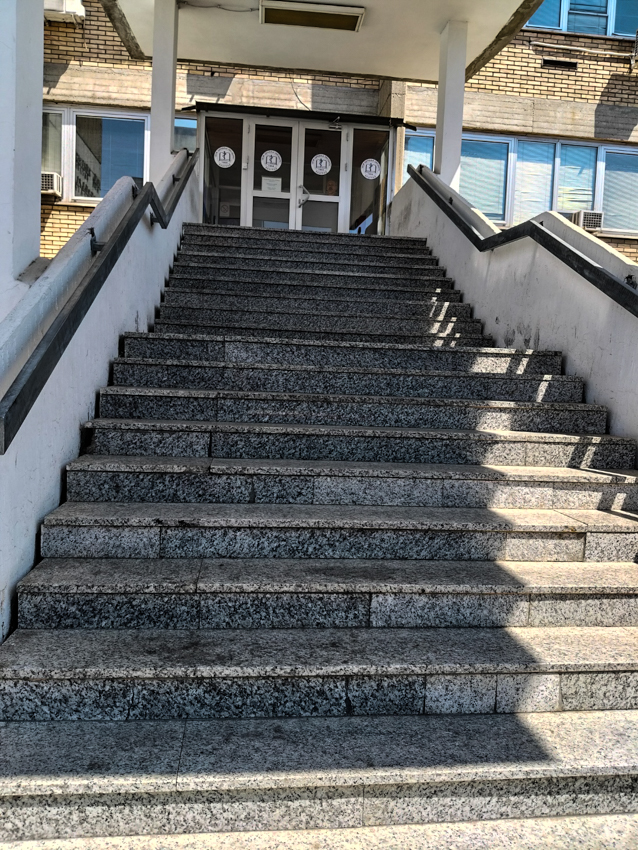
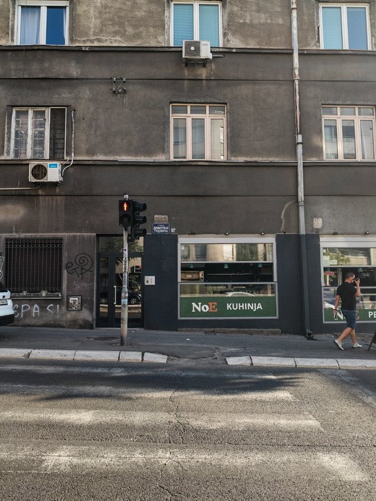
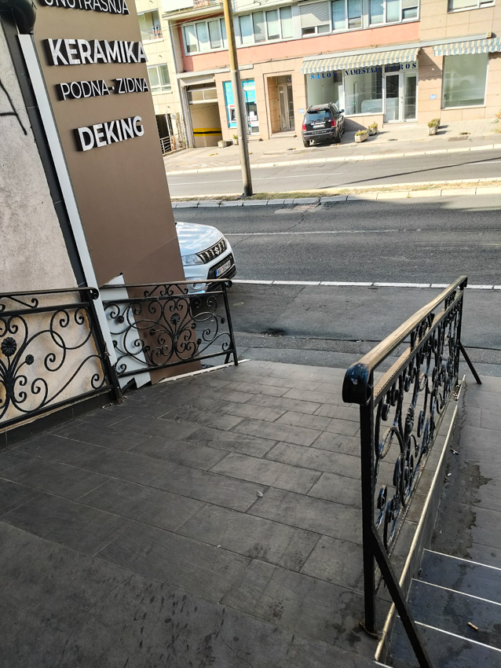
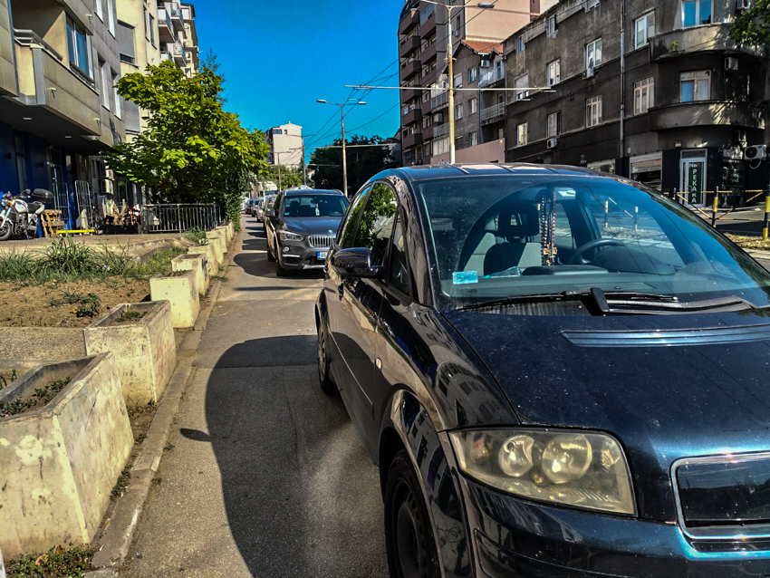
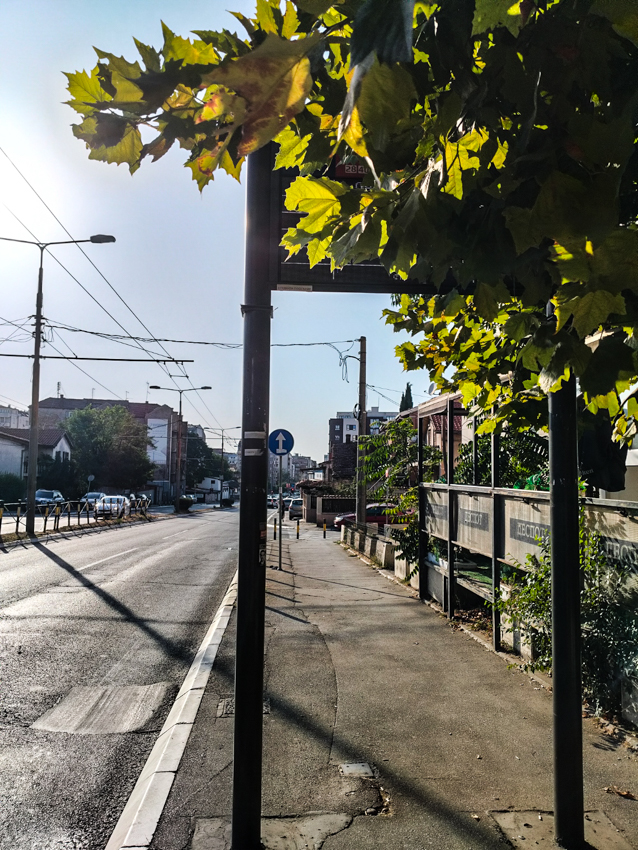
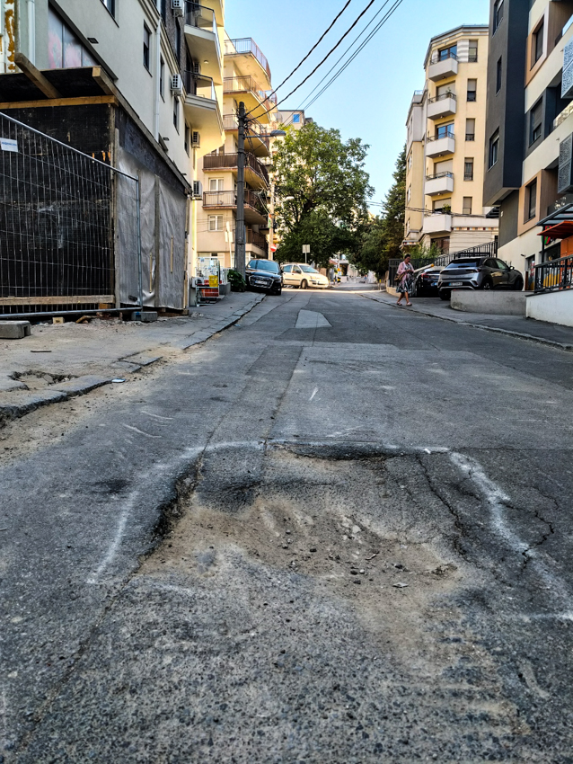
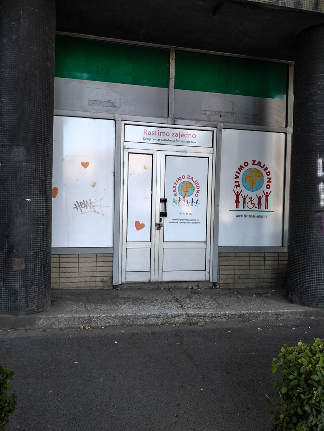

He tried taking the pram to the nearest hospital, but there was no ramp. “How ever will I get in?” Thought A.V. But he just kept going.

Once upon a time, A.V was tossing and turning all night long. He just couldn’t get to sleep! Until finally, his heavy eyes grew heavier and heavier until he drifted off into a dream city that was anything but smart.
He found himself in a familiar street. But he had a pram! “A pram?” he thought. “I don’t know where this came from, but somehow I’ve got one and I need to get around this city.”
He tried taking the pram to the nearest hospital, but there was no ramp. “How ever will I get in?” Thought A.V. But he just kept going.

He continued on and came by a crosswalk. He pressed the button but the light never went green! “I can hear the crossing signal, but I cannot cross safely.”

He ran across the road and found a store, but it was empty. “Guess I’ll just keep going!” He turned around and almost slammed into a staircase to nowhere.


He managed to get down without a single scratch! “To the bus stop!” He thought, but was yet again faced with a challenge and a city that was very far from smart.
“Ah yes, the bus stop! I made sure to make this one smart! I placed a digital timetable at every one! But wait... why can’t I read it?”

He stared out the window as he passed through his city, smiling from ear to ear. But then he was abruptly jolted in his seat by a pothole that seemed to reach out of nowhere.

The more challenges he faced, the more he began to blame the incompetence on others. “I gave them everything they need! Why on earth is this city so unSmart?”

Amidst all the chaos of thoughts and woes, it suddenly dawned on him that he never checked on the baby. He leaned over and realised the whole adventure had been a nightmare of priorities gone wrong.
Just as he entered the building, his alarm began to ring. A.V awoke in a pool of sweat, breathing heavily as if he had been dragged through every single city problem in one night.
Luckily for him, he never had a change of heart at all! The taxpayer’s money remains safe with him for another day, and the city continues to stay just as unSmart as ever.